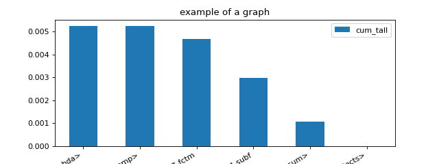

tools¶
decompress_zip¶
download_and_unzip¶
draw_diagram¶
draw_graph_graphviz¶
- teachpyx.tools.graphviz_helper.draw_graph_graphviz(vertices: List[Tuple[int, str]], edges: List[Tuple[int, int, str]], image: str | None = None, engine: str = 'dot') str[source][source]¶
Draws a graph using Graphviz.
- Paramètres:
edges – see below
vertices – see below
image – output image, None, just returns the output
engine – dot or neato
- Renvoie:
Graphviz output or the dot text if image is None
The function creates a file
<image>.gvif image is not None.edges = [(1,2, label, color), (3,4), (1,3)] # edges list vertices = [(1, label, color), (2)] # vertices list image = "image_name.png"
total_size¶
- teachpyx.tools.total_size(o, handlers=None)[source][source]¶
Returns the approximate memory footprint an object and all of its contents.
- Paramètres:
o – object to measure
handlers – for recursivity purpose
- Renvoie:
total size
Automatically finds the contents of the following builtin containers and their subclasses: tuple, list, deque, dict, set and frozenset. To search other containers, add handlers to iterate over their contents:
handlers = {SomeContainerClass: iter, OtherContainerClass: OtherContainerClass.get_elements}
Source: getsizeof.
profiling¶
- class teachpyx.tools.profiling.ProfileNode(filename: str, line: int, func_name: str, nc1: int, nc2: int, tin: float, tall: float)[source][source]¶
Graph structure to represent a profiling.
- Paramètres:
filename – filename
line – line number
func_name – function name
nc1 – number of calls 1
nc2 – number of calls 2
tin – time spent in the function
tout – time spent in the function and in the sub functions
- add_called_by(pnode: ProfileNode)[source][source]¶
This function is called by these lines.
- add_calls_to(pnode: ProfileNode, time_elements)[source][source]¶
This function calls this node.
- as_dict(filter_node=None, sort_key=SortKey.LINE)[source][source]¶
Renders the results of a profiling interpreted with function @fn profile2graph. It can then be loaded with a dataframe.
- Paramètres:
filter_node – display only the nodes for which this function returns True, if None, the default function removes built-in function with small impact
sort_key – sort sub nodes by…
- Renvoie:
rows
- static filter_node_(node, info=None) bool[source][source]¶
Filters out node to be displayed by default.
- Paramètres:
node – node
info – if the node is called by a function, this dictionary can be used to overwrite the attributes held by the node
- Renvoie:
boolean (True to keep, False to forget)
- property key¶
Returns
file:line.
- to_json(filter_node=None, sort_key=SortKey.LINE, as_str=True, **kwargs) str[source][source]¶
Renders the results of a profiling interpreted with function @fn profile2graph as JSON.
- Paramètres:
filter_node – display only the nodes for which this function returns True, if None, the default function removes built-in function with small impact
sort_key – sort sub nodes by…
as_str – converts the json into a string
kwargs – see
json.dumps()
- Renvoie:
rows
- to_text(filter_node=None, sort_key=SortKey.LINE, fct_width=60) str[source][source]¶
Prints the profiling to text.
- Paramètres:
filter_node – display only the nodes for which this function returns True, if None, the default function removes built-in function with small impact
sort_key – sort sub nodes by…
- Renvoie:
rows
- teachpyx.tools.profiling.profile(fct: Callable, sort: str = 'cumulative', rootrem: str | None = None, as_df: bool = False, return_results: bool = False, **kwargs) str[source][source]¶
Profiles the execution of a function.
- Paramètres:
fct – function to profile
sort – see
pstats.Stats.sort_stats()rootrem – root to remove in filenames
as_df – return the results as a dataframe and not text
return_results – if True, return results as well (in the first position)
kwargs – additional parameters used to create the profiler, see cProfile.Profile
- Renvoie:
raw results, statistics text dump (or dataframe is as_df is True)
(
Source code,png,hires.png,pdf)
{kind=link}
{kind=link}
- teachpyx.tools.profiling.profile2df(ps: Stats, as_df: bool = True, clean_text: bool | None = None, verbose: bool = False, logf=None)[source][source]¶
Converts profiling statistics into a Dataframe.
- Paramètres:
ps – an instance of pstats
as_df – returns the results as a dataframe (True) or a list of dictionaries (False)
clean_text – function to clean function names
verbose – verbosity
logf – logging function
- Renvoie:
a DataFrame
import pstats from onnx_array_api.profiling import profile2df ps = pstats.Stats('bench_ortmodule_nn_gpu6.prof') df = profile2df(pd) print(df)
- teachpyx.tools.profiling.profile2graph(ps: Stats, clean_text: Callable | None = None, verbose: bool = False, logf: Callable | None = None) ProfileNode[source][source]¶
Converts profiling statistics into a graphs.
- Paramètres:
ps –
an instance of pstats
clean_text – function to clean function names
verbose – verbosity
logf – logging function
- Renvoie:
an instance of class @see cl ProfileNode
pyinstrument has a nice display to show time spent and call stack at the same time. This function tries to replicate that display based on the results produced by module
cProfile. Here is an example.<<<
import time from teachpyx.tools.profiling import profile, profile2graph def fct0(t): time.sleep(t) def fct1(t): time.sleep(t) def fct2(): fct1(0.1) fct1(0.01) def fct3(): fct0(0.2) fct1(0.5) def fct4(): fct2() fct3() ps = profile(fct4)[0] root, nodes = profile2graph(ps, clean_text=lambda x: x.split("/")[-1]) text = root.to_text() print(text)
>>>
fct1 -- 3 3 -- 0.00005 0.61214 -- :11:fct1 (fct1) <built-in method time.sleep> -- 3 3 -- 0.61209 0.61209 -- ~:0:<built-in method time.sleep> (<built-in method time.sleep>) +++ fct4 -- 1 1 -- 0.00001 0.81255 -- :25:fct4 (fct4) fct2 -- 1 1 -- 0.00003 0.11095 -- :15:fct2 (fct2) fct1 -- 2 2 -- 0.00004 0.11092 -- :11:fct1 (fct1) +++ fct3 -- 1 1 -- 0.00002 0.70159 -- :20:fct3 (fct3) fct0 -- 1 1 -- 0.00001 0.20035 -- :7:fct0 (fct0) <built-in method time.sleep> -- 1 1 -- 0.20034 0.20034 -- ~:0:<built-in method time.sleep> (<built-in method time.sleep>) +++ fct1 -- 1 1 -- 0.00001 0.50122 -- :11:fct1 (fct1) +++ <built-in method time.sleep> -- 4 4 -- 0.81243 0.81243 -- ~:0:<built-in method time.sleep> (<built-in method time.sleep>)
run_graphviz¶
run_subprocess¶
video¶
- teachpyx.tools.display.pygame_helper.build_diff_image(pygame, screen, h, maxw, seq1=None, seq2=None, diff=None, fonts=None, bars=None, colors=None, progress=None, prev_bars=None)[source][source]¶
Builds an image to show a difference between two lists, we assume these list contain distinct items.
- Paramètres:
pygame – module pygame
screen – screen (pygame surface)
h – height of a line
maxw – width of the screen
seq1 – list 1 (can be None)
seq2 – list 2 (cannot be None)
diff – difference (object SequenceMatcher)
fonts – dictionary of fonts with keys
'font','font_small','font_half'bars – each item of sequence 2 can be associated to a width (in [0, 1])
colors – dictionary of colors (see below)
progress – draws the progress between two list
prev_bars – previous width
Colors:
black: no change
blue: new
red: deleted
green: vert
yellow: bars
When progress is not None, the picture is a kind of average between the previous position and the new one. When a suggestion moves from p1 to p2, it defines a circle. The result looks like this.
- teachpyx.tools.display.pygame_helper.display_line(ligne: List[Tuple[float, float]], screen, pygame)[source][source]¶
Affiche une ligne à l’écran.
- teachpyx.tools.display.pygame_helper.empty_main_loop(pygame, msg: str | None = None)[source][source]¶
Removes all events in the main loop, a mouse click make the program halt, another click makes it start again.
- Paramètres:
pygame – module pygame
- Renvoie:
event
pygame.QUIT?
- teachpyx.tools.display.pygame_helper.get_pygame_screen_font(h: int, size: int, flags: int = 0)[source][source]¶
Creates a surface with pygame, initialize the module, creates font.
- Paramètres:
h – size of the main font
size – screen size
flags – see pygame.display.set_mode
- Renvoie:
pygame, screen, dictionary of fonts
The dictionary of fonts contains three fonts of size h, 3h/4, 5h/6.
This function leaves file still opened and generates warnings. Parameter flag can be useful if you run the function just to test that it is working and the result does not need to be seen.
- teachpyx.tools.display.pygame_helper.wait_event(pygame)[source][source]¶
The function waits for an event, a
- Paramètres:
pygame – module pygame
- teachpyx.tools.display.video_helper.get_local_folder(file_or_folder, name='temp_video') str[source][source]¶
Creates or cleans a local folder create in the same folder as file_or_folder.
- teachpyx.tools.display.video_helper.make_video(images: List[str], outvid: str, fps: int = 5, size: Tuple[int, int] | None = None, is_color: bool = True, format: str = 'XVID') Any[source][source]¶
Creates a video from a list of images with opencv.
- Paramètres:
outvid – output video
images – list of images to use in the video
fps – frames per second
size – size of each frame
is_color – color
format – see fourcc
- Renvoie:
The function relies on opencv. By default, the video will have the size of the first image. It will resize every image to this size before adding them to the video.